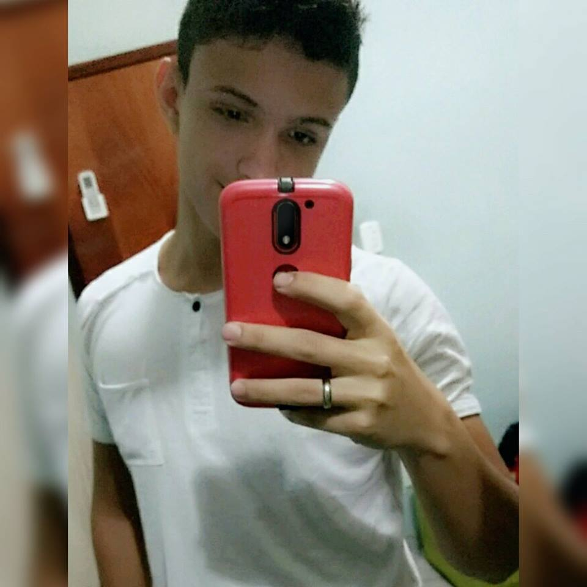

|  |
Autobiografia
Meu nome é Marcelo Alcantara Kohlhase tenho 17 anos, natural de Cuiabá nasci no dia 28/06/2000, moro junto com meus pais e com meu irmão mais velho.
Quando eu tinha 10 anos eu gostava de jogar Playstation e sempre amei vídeo games, foi um dos motivos que fez com que eu me interessasse pela informática. Sempre fui um garoto calmo, e alegre. Minha mãe sempre me apoiou com os estudos e me ajudou em todos os momentos que precisei de auxílio para fazer atividades da escola.
Estou cursando no terceiro ano do ensino médio junto com o técnico em informática, estou buscando estudar a construct 2 para que eu possa desenvolver meu jogo, com objetivo de concluir o ensino médio para a obtenção do certificado para entrar no mercado de trabalho.
Pretendo fazer faculdade de engenharia da computação ou ciencia da computação porque me interessa bastante pelo fato de envolver hardware e software.
|
|
Autobiografia
Meu nome é Jean Carlos Torres tenho 17 anos, nasci em Brasília-DF no dia 18 de abril de 2000.
Moro com meus pais, sou filho único. Estou cursando o 3º Ano do ensino media técnico de informática, sempre gostei dessa área, amo tecnologia, robôs.
Desde pequeno desmontava meus brinquedos eletrônicos para inventar outras coisas. Quando criança eu era muito bravo, me irritava fácil, hoje em dia melhorei mas continuo sendo um pouco,
mas sempre fui feliz, meus pais sempre fizeram tudo por mim então tenho muito a agradecer a eles.
Amo o técnico de informática, gostei muito da área como disse antes eu já era familiarizado com ela e quanto mais aprendia sobre mais gostava.
Estou aprendendo a criar jogo para conseguir desenvolver o meu TCC junto com meu amigo Marcelo Kohlhase, para concluir o técnico. Pretendo cursa ciência da computação. |